Chapter-2
中原巡礼·寻一曲，流转不息的华夏之歌
山东

Shandong·安宁享天伦
有人说：山东从历史到现代，不论时间如何变迁，它总能让人惊叹。一份怡然自得的休闲，徒步行走于青山碧海之间，城市与自然没有明显的界线，休养生息如同置身于世外桃源……这里曾是孔夫子的故乡，曾是姜太公的封地，曾隐居一个妙笔蒲松龄，曾谱出数不胜数的人文乐章。

泰山
Mount Taishan
云 涌 “ 至 尊 ”
登泰山，不仅是一种意志上的磨炼，更是种自我的新生，如同泰山在面临百年风雨、千年沧桑中所经历的种种洗礼般，新生，由内而外，由灵魂至躯壳。
泰山蕴育着一种思想，内敛、深邃，夹杂着山水之乐，却在不经意间，将生命的真谛着实演绎。
一直以来，人们都对泰山充满了向往，历朝历代的天之骄子，都曾以泰山封禅为自身成就的最高境界，然而却只有功德极高的帝王才有此尊贵的资格。几千年来，无数文人墨客纷至沓来，为的是一睹“首领”的风范。在这个极具文化内涵的地方，明清建筑的美轮美奂，将建筑、雕刻、绘画、山石与林木融为一体的大成，几乎成为了东方文明最伟大而又最庄重的象征。
泰山岱宗庙。游人来到泰山，除了仰视泰山的雄伟，还可以体验一份虔诚。那其中，还可能有对自然的敬畏。
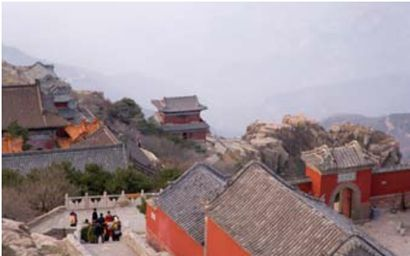
泰山，风景名胜亦是数不胜数。在这里，自然景观与人文景观完美地融合，从祭地经帝王驻地的泰城岱庙到封天的玉皇顶，一条蜿蜒的曲线在与历史交融的瞬间巧妙形成长达十千米的文化景观——地府——人间——天堂。一路走来，中华民族几千年的历史清晰可见。
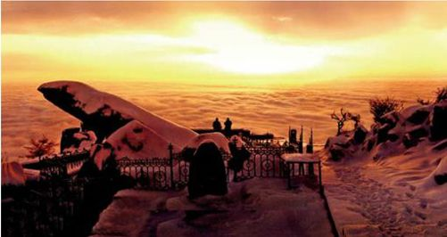
泰山日出。当人们站在山岱顶端举目远眺，视线中的那抹晨曦从灰暗转向淡黄，当第一缕阳光洒落，天幕就此被掀开，一轮红日就这样冉冉升起，遂金光四射。整片山峦尽燃其彩，一幅壮观的海上日出图就这样封笔。
“会当凌绝顶，一览众山小。”一直以来，我们怀着对古人的崇拜、对泰山的期待不远千里直奔而来，登临泰山，犹如跨上长城的阶梯，激动的心情不能自已。雄奇的气势，秀美的景色，一旦迈开第一步，便注定要攀达玉皇顶。
“泰山观日出”，在泰山行中，这是最为壮美的一次游历。夜以继日的攀登，只为黎明时分的那眼眺望……
面对如此磅礴的气势，如此高大的山峦，人们的心中总是会顿生感慨，那是一种博大的精神，它以博大待历史，历史便在它面前大放异彩，仿佛是个智慧的长者，捋几下长白的胡须，便将人生之理授之。“或重于泰山，或轻于鸿毛”，登过一次泰山，对这话的理解，又入木三分。
泰山的云雾是泰山众多风景中值得推崇观赏的一处，站在山岱顶端俯视，团团白云与滚滚乌云相互交融，仿佛汇成一片奔腾着的海洋，可谓妙趣横生。观看这样的景观，会让人心潮起伏，思绪万千。
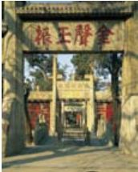
孔庙正门前的石坊群
曲阜孔庙
Temple of Confucius in Qufu
曲 高 和 “ 众 ”
孔子以他的真诚，唤醒了无数懵懂的灵魂，散播了正义的种子。
从孔庙看孔子，虽然之后君臣皆对他尊崇有加，可是，当他只身游走于诸侯之间，承受屈辱之时，那份艰辛，又有谁知？
曲阜，“东方圣城”，是孔子的家乡。孔庙，是中国历代封建王朝祭祀孔子这位伟大的思想家、政治家、教育家的地方，就坐落在阜城中央。
孔庙共有两道特别值得一提的门，第一道名为“棂星门”，又称“天田星”。古代祭天，要先祭棂星，孔庙设置这样一个门，意思是说“尊孔子如同尊天”。后人尊奉孔子，因此在孔庙的第一进院落左右两侧，分别修建了两座对称的木质牌坊，东题“德侔天地”，西题“道冠古今”。功德之深厚，可见一斑。
圣时门始建于明永乐十三年，设计美轮美奂，从拱门向里望，深邃莫测之感油然而生。跨过此门，豁然开朗，面前宛如一个大大的庭院，古柏成片，绿草茵茵。
在孔庙中的“至圣庙”，牌坊上三个篆体大字异常突出。对“至”，人们有着各自不同的理解，“孔子的思想是至高无上的”抑或是“孔子的思想前无古人后无来者”。无论哪种，都充分证明了后人对于孔子学说的认同和肯定。孔子的思想影响了数代君王，在他们看来，研读其思想犹如吃饭睡觉般日不可缺。所以，在庙堂可以看到很多御赐的石碑，在当时，是为了彰显皇室对于孔氏家人的尊重和荣宠。
快睹门与仰高门
在孔庙拱桥桥南的东西两侧，甬道相连两桥。东边名为“快睹门”，取自李渤“如景星凤凰，争先睹之”，意为先睹为快之门；西边名为“仰高门”，取自《论语》中“仰之弥高”，赞颂孔子的学问高深，它是孔庙的第二道偏门，过去只有皇帝祭祀时才可以走正门，一般人只能从仰高门进入。
孔庙中最大的石碑来自于康熙皇帝。这块碑体并碑座共重65吨的康熙御制石碑，一路从京城运送至曲阜，沿途百姓皆下跪，如同见到圣旨一般，场面壮观之至。当时正值寒冬，交通不便加之工具简陋，可是高高的皇命在上，还是动用了300多民工、200多耕牛，两根圆木压底，让石碑在上面滚动前行，如果再行不通，就在路边洒水，结冰之后，在利用圆木拖动，为的只是能够谨遵皇命，顺利到达曲阜……
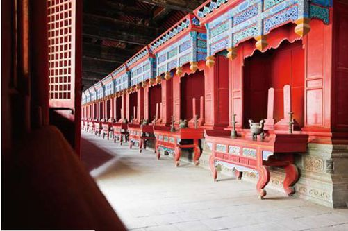
孔庙内景
避暑胜地话山东 ShanDong
一条引人注目的黄金海岸线，一桌使人垂涎的美味海鲜，将小腿浸入凉滋滋的浪花，管它烈日有多炎炎！通往避暑胜地的旅途中，齐鲁之地——山东，注定因其傲人的资本成为这趟列车无可挑剔的终点。
早在春秋战国时期，山东已经闻名于天下，这里的海产资源尤为突出，地理条件得天独厚，温带季风性气候人到人爱，青岛、威海、蓬莱等城市，成为山东省著名的避暑胜地，扬名海内外。
青岛是山东人民的骄傲，这个国际化的海滨城市一年四季温度适中，夏季虽有降雨，却绝无酷暑，冬季时间虽长，却没有严寒。
初踏这片土地，满眼的欧式建筑会让人误以为闯入了欧洲的后花园。走进美轮美奂的天主教堂为爱情立下一段盟约；站在栈桥公园的回澜阁感受丝丝清凉的海风；冲向辽阔绵长的海滨浴场让身体享受夏日冰爽，之后准备好你的胃，端起大大的啤酒杯，与国际友人一起，从8月13号的国际啤酒节开始，彻夜狂欢，不醉不归……醒酒之时，吟诵着“泰山云虽高，不如东海崂”这样的诗句，来到崂山的海光山色中喝一口冰凉入肺的地下矿泉水，霎时间，顿觉夏日已经过去了一大半！
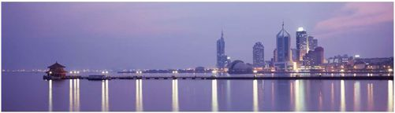
青岛具备了大海的风情，城市的妩媚，乡村的清新，这里，就是梦想中的天堂。
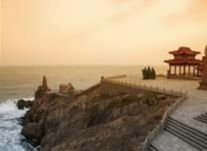
提到威海，它可能不如大名鼎鼎的青岛震撼人心，但它却是一个小而诗意的地方。这里被评为世界上最适合人居住的地方，中国仅有这一个地方入选。在这里，如果你在海滨拥有一个小院或别墅，那份惬意，相信是你梦想中想体验的感觉。
威海海滨
顺山势而下，踏着波涛的旋律，浪花涌上威海的沙滩。
威海热爱它的子民，一如居民爱戴养育他们的威海，作为“世界上最适合居住的地方”，它从来没有过任何傲慢。这里打的便宜、交通便利、海鲜实惠，实在是夏季不可多得的避暑城市。有人说，这里吸收了海的精神、浪的美丽，以其特有的姿态构筑起城市的灵魂，此言精辟！
“世外仙境云缥缈，玄门正宗有蓬莱。”一直以来，人们都愿意相信，在那蔚蓝的大海之上，一定漂浮着几座仙山，如人间仙境般迷人，琼楼玉宇静卧山上，日日夜夜，美乐飘飘……在知道海市蜃楼之前，人们便知道了“蓬莱”，脑海中对于仙境的向往，也就从此烙下印记，凝在山东的蓬莱与长岛之上。每逢夏日，蓬莱与长岛都是人们驱车全速赶往的地方。这里的景致有些许不同，多了几分“仙气”。“仁者爱山，智者爱水”，在蓬莱与长岛，山水相依，人们的精神境界达成完美的统一。在这里，海洋世界的美妙让人欲罢不能，和渔民一起出海打鱼的悠闲惬意，更如同一枚碎冰，擦拭着人们烦闷的内心。
海是快乐的美丽精灵，是涌动的悦耳旋律；在大海面前，城市也踮起脚尖，微笑地跳起芭蕾。山东有幸聚集了这么多城市，在盛夏午夜剧场的帷幕后面，它就像一个有着丰富经验的歌舞团团长，看着灯光照耀下那些曼妙的身姿，微笑地扬起嘴角……
河北

Hebei·盛世遇皇尊
这里有嫦娥曾经遗落的妆镜，这里有康熙北巡时的惦念，这里有碧绿的天然草毡，还有肥沃的天然牧场。王侯将相称这里是人杰地灵之地，甚至将自己的轮回之地都安定于此……河北，山水共生中，孕育出低调的绮丽；时光交错间，落下骇世的空灵。
白洋淀
Lake Baiyangdian
且 听 荷 吟
对于荷花，中国人总有着一股莫名的眷恋。而荷边的芦苇，就如同痴恋她的情人，随风轻摇的姿态，仿佛在朗诵着一首绝世情诗，将心底的爱恋向荷一一倾诉……
仪态万千，碧荷蓝天；苇绿鸟鸣，北国江南。说到河北，你可以不知道铁球，面酱，春不老，却不能不知道华北明珠——白洋淀。从名字的三个字，便隐约可看到一股湿漉漉的水汽。
有人曾这样形容白洋淀：“天生动地映在水波里，鱼像是游在半空。”的确，在面对如此美妙的大自然时，那种从心底深处滋生的向往，真的会化做一种动力，一种情绪，在亲身感受之后，留下非凡的记忆。
春暖，白洋淀水域清澈见底，浩渺烟波让人仿佛置身仙境，翠绿的芦苇奋力地生长，为整个淀区带来盎然的生机；夏凉，这时的淀区，荷花开得正艳，望着湖内点点白帆，感受着湖面吹来的微风，热意顿消；秋爽，肥硕的鱼儿欢快地跳着，迫不及待地竞相上岸，蟹子肥美，丰收的欣喜映上渔民的眉梢；冬趣，千里冰封，万里皑皑，一个巨大的天然冰场就在淀区形成，人们自由地驰骋其中，笑声闹声连成一片……
有这样一个美丽的传说，相传很久以前的中秋夜晚，嫦娥偷吃仙草，迫不得已离开月宫，就在她即将落入凡间的那瞬，猛然惊醒，可随身携带的玉镜却不慎掉落尘世。镜子碎裂成为143块，形成现在白洋淀的143块淀泊。即使今日，人们仍然快乐地讲述着这个美好的传说，不仅因为白洋淀带给人们愉悦享受，更是因为这里已经成为河北人民生活中不可分离的一部分。在历史上，关于白洋淀的评价数不胜数，今日淀区曾有“燕南赵北”之说，因为这里正是横跨燕赵的土地，这土地一直以来都拥有迷人的地理风光，重要的军事地位，被文人墨客反复吟咏。
夏凉时的淀区，荷花开得正艳。
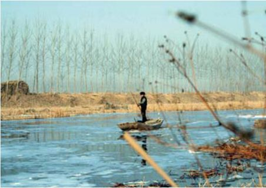
秋冬时的白洋淀略显萧条，但这正是为保存实力，为来年更加美丽。
随着时代的发展，如今的白洋淀除了风景秀美，享誉中外的“全鱼宴”更是可餐。作为河北菜的全鱼宴，属冀中南派，山区禽类和水区鱼类是主料。在白洋淀，全鱼宴是菜肴中的特色精品，讲究的是因材施艺，烹制鲜活，通过高超的刀工和特殊的烹调，让人食鱼而不见鱼，配之以富有诗情画意的造型，绝妙的滋味，大概一辈子都会唇齿留香。
游一趟荷花大观园，精品荷园、精心园、垂钓园、民俗园让人流连忘返；走一遭文化园，西淀风荷、东堤烟柳、康熙水围行宫、嘎子村让人寻古叹今；戏一次鸳鸯岛，芦苇环绕、鸳鸯映月让感情感天动地。
如今的白洋淀，像是一座大观园，却纷而不繁，杂而不冗——似乎是因为灵魂深处仍保留着荷的特质。
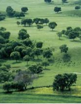
青青的草原景象
坝上草原
Bashang Grassland
美 丽 的 天 然 草 毡
草原，辽阔而苍茫的草原，就在人们用手挡住额头极目远眺的瞬间，将自由与广博凝成一道永恒的风景。
蒙语中，这片地域被称做“海留图”，意为“水草丰茂的地方”。即使是这样一个生动的名字，也无法囊括它湖水的清澈、青草的肥美、羊群的惬意……这里就是坝上草原。行走于华北平原到内蒙古高原交界的地方，陡然升高，因此以“坝上”得名。一直以来，坝上草原都是坝上高原的重要组成部分，然而这里却有着得天独厚的别样风景。
农人满载着秋日的收获，赶着马行走在大草原。
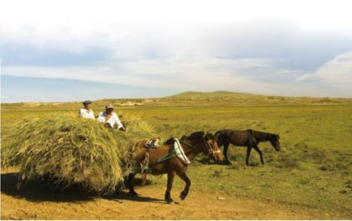
坝上草原旅游季节的平均气温在17度上下，既不会太热，又不觉太冷，可是，依然能在夏日品到芳草鲜美，依然能在冬日欣赏白雪皑皑。它西起张家口，东至承德，在这350平方千米的草原之上行走，看着脚下的繁花满地，碧草成波，看着头上的云朵轻舞，天穹压落，天空与地面的距离就这样被不断压缩，“天地为伴”的感觉油然而生，仿佛一转身便能和云朵擦肩而过。
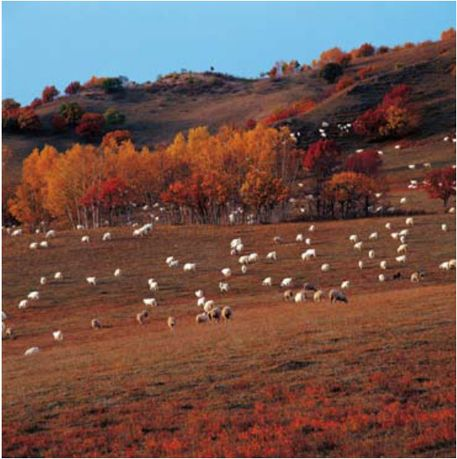
羊儿满坡、遍地秋色的坝上草原，让人画一般痴迷其中。
来过的人都说，仿佛坝上草原有着与生俱来的魔力，炎热到了这儿都要绕行。的确，草原的夏季没有酷暑，有的，就只是清新宜人。坝缘随处可见色彩斑斓的野花，那绚丽的颜色自顾自摇曳着绽放，在晨曦中睁开双眼，在四季中更换盛装。坝缘山峰多不胜数，与坝区接壤，到处是采不完的山珍，享不尽的美味。伸手触摸那潺潺的小溪，冰凉一下子流遍全身。四周是高而笔直的白桦林，站在树林中，沐浴着斑斑点点叶片周围漏进的阳光，心情也跟着变得微凉起来。
来到草原，哪有不去骑马的道理？也许，就在那美丽风光之中，骑着骏马畅快游走，草原英雄的美名就此收纳囊中。一匹青色的蒙古马，很长的鬃毛，健壮而高大的身躯，优美的线条和结实的肌肉让人一下便想起徐悲鸿笔下的《骏马图》。骑在马背上的感觉超乎你所有的想象，视野倏然开阔，挺起胸脯的瞬间，胸中涤荡着股股豪气。策马扬鞭，在一片绿海中疾驰，如此快乐，如此酣畅淋漓。驾驭缰绳的瞬间仿佛驾驭着自己的命运，小心翼翼却又迫不及待。没过多久，一个英姿飒爽的形象就这样浮出茫茫绿堤。
夜晚，在皓月下围起一团篝火，或是与恋人倾诉衷肠，你侬我侬；或是与天南海北的游人把酒畅欢，大口喝酒大块吃肉；或是围着火焰载歌载舞，用身体绽放热情；或是就那么静静地坐着，与草原对视，与星空攀谈……此情此景，如何不叫人心生愉悦？
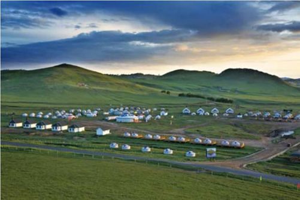
坝上的蒙古包好像朵朵美丽的花儿点缀在草原上。
清晨，伸着懒腰与红日摆手，穿过眼前柔软的天然草毡，选一处喜欢的地方，静静地看着那轮红日冉冉升起，从心底体验那份“出生”的喜悦，也许在这样的美景前，对人生的美好又多出几分爱恋。就在这个时候，牛群、羊群成片成片地出现，远远望去，那行走的姿势仿佛滚动着的棉花糖，洋溢着可爱与壮观。
闪电湖
闪电湖是坝上草原著名的景区之一，这里湖水清澈而美丽，宛如镶嵌在坝上的一颗璀璨明珠，将坝上草原装点得更为多姿多彩。在闪电湖畔，万顷草滩尽收眼底，风景如画，美丽异常。
活力四射的坝上，汇聚笑声的草原，可爱的羊群，悠扬的马头琴。无论是夏日的云花野芳还是秋日的万山红遍，无论是白天的色彩斑斓还是夜晚的静谧安详，每时每刻，坝上草原都像一首优美的诗，抑或是一幅多彩的画，在日与夜的交替中，在大自然的美丽传说中，不断变换着色彩，让人们忍不住一遍又一遍地从头读起。
承德避暑山庄
The Imperial Summer Villa of Chengde
沐 浴 时 光 的 清 凉
承德避暑山庄，一座有山有水的皇室独享地，如今掀起羞涩的面纱，将美丽的容颜一一展现。
避暑山庄位于河北承德市中心北部。相传当年康熙北巡，发现承德的地势优良，气候宜人，加之风景优美，遂选定这里建行宫。从康熙到雍正，从雍正到乾隆，耗时90年，行宫终于竣工。这里不同于紫禁城的奢华，似田野里淡淡盛开的野菊花。
走进山庄，里面参天的树木，清新的芳草，伴着时而嗅到的花香时而听到的鸟鸣，合奏成一曲自然之乐。
内午门过后，康熙御笔金匾上的大字格外吸引人们的关注——澹泊敬诚斋。如此雅致的名字，是否能让人联想到大清皇帝的大家风范？整个殿堂秀外慧中，似乎从骨子里便流露出古朴和典雅。
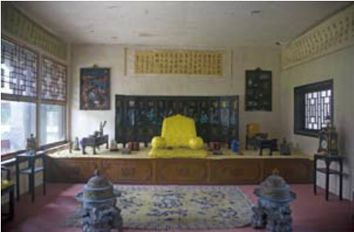
龙腾色黄，皇家之气息浓重。
穿过敬诚斋来到“四知书屋”，低调的摆设却难掩尊贵的氛围，当年皇帝便是在这里召见大臣商议政务。那时候，皇帝就寝于烟波致爽殿。走上特别为胜地楼铸造的假山，一片湖光山色尽收眼底，当年的帝后眼中，也曾是相同的斑斓。
避暑山庄的景点着实堪多，看一看万壑松风殿，走一走松鹤斋，似乎山庄里的每一处风景背后，都有着一段美丽的故事。
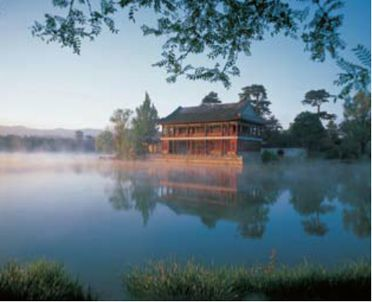
山庄中的烟雨楼，名副其实一副烟雨蒙蒙的神色。
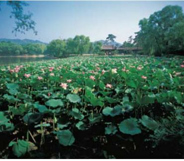
山庄中荷叶鱼儿戏水，一派江南水乡景色。
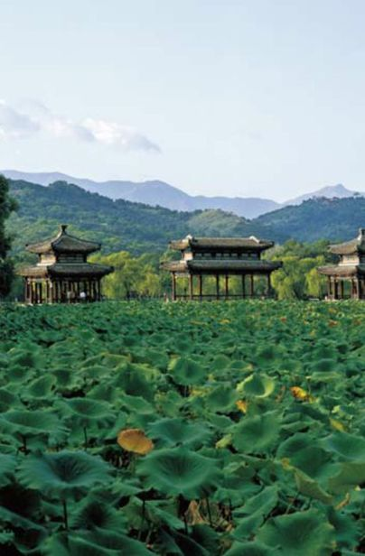
水心榭。悠悠水上有楼阁，再借了远山中的黛色，更是山水人无声唱和。
山庄的西北山顶是观光的最佳地点，站在亭子里，整个承德的风貌都映在眼中，承德著名的外八庙，宏伟壮观与金碧辉煌的建筑也可以一并领略。从前康熙皇帝不远万里来到山庄为见少数民族的首领，并在这里依据他们的生活习惯和宗教信仰建筑了这些寺庙，从此深得人心。“建一座庙胜养十万兵”，这句话一直在承德流传着，从字里行间，似乎就已经领悟到清初繁荣昌盛的根本原因。
山庄的东南是一片湖区。这里的风格与江南水乡稍显相似，柔美之情充斥其中。一路烟波浩渺，如临仙境。在淼淼碧波之间，那座突兀的小岛略显羞涩地呈现。小岛名做“金山”，金山上，峭石横生，草木葱茏。整座山上遍是亭台楼阁，似乎小岛是一块磁石，专吸宝物。金山山顶，一座直立的长亭跃然凸现，与山脚下形如弯月的回廊相互映衬。
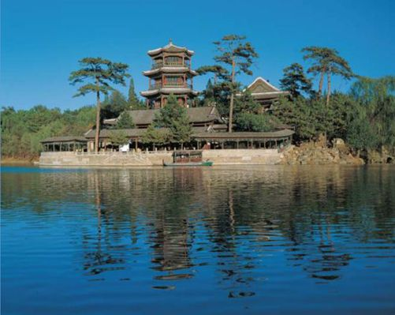
金山上的帝阁。天子应于此远望天下。
据史料记载，避暑山庄的金山岛原是仿照镇江的金山寺。当年康熙南巡，路过镇江，饱览金山寺的秀美风光，回到京城后总是心驰神往。于是，在避暑山庄内修葺起一座金山，了却当年未尽的留恋。
本是山林一色的自然景观，却在中央竖起那样一座岛。若不是宠幸之至，它也不会拥有山庄的各式珍宝直到今天。康熙皇帝亲自为金山上殿宇题额，山上的“天宇咸畅”殿和“镜水云岑”殿更是纳入他亲自所题的避暑山庄三十六景之中。同时，他还赋诗作画，“通阁断霞”、“层岩千尺”如此美景，莫非是想靠笔墨隽永珍藏？
山庄很大，大到非要亲自感受才知如何形容。山庄很美，美到停泊数日仍然不愿离去。在风波涌动之时，在绿树成荫之下，在美轮美奂之中，那份感怀，就此定格。
清东陵
Eastern Royal Tombs of the Qing Dynasty
祭 奠 逝 去 的 华 年
本是一片墓地，却引来无数文人墨客；本是沧海一粟，却让人们争相典藏。熙熙攘攘的人流中，本该萧瑟的风却显得无限雀跃，似乎是因为，抛开沉睡着的历史，那一片匠心独运的奢华着实是石雕艺术中的瑰宝。
清东陵，十三陵中的一处，它是中国最后一个王朝最重要的帝王后妃陵。在这片墓群中，不仅保存着规模最大、体系最完整的古帝陵，还建有五座皇陵：顺治帝——孝陵、康熙帝——景陵、乾隆帝——裕陵、咸丰帝——定陵、同治帝——惠陵。慈安、慈禧的后陵也置于此，加之妃园五座，公主陵一座，共埋葬皇后15位，妃嫔136位。
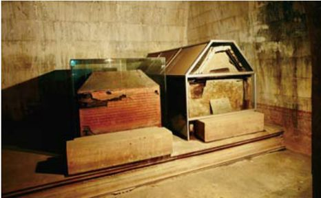
陵墓中的景象，虽然有了保护措施，但依然能看到年代的痕迹。
相传，清东陵是当年顺治皇帝打猎路过时选定的。在现在的遵化市境内。从康熙二年开始修建，整个工程南北长125千米、宽20千米，四面环山的位置如同象征着帝王万古长青，在一片葱绿中，恢弘建造。清东陵正南面，烟炖、天台两座山相峙而立，形成只有50米宽的谷口，被后人称之为“龙门口”。
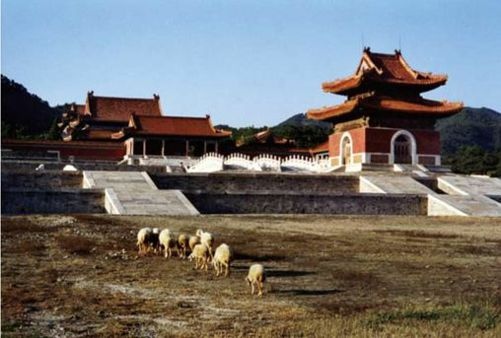
清东陵的地面建筑群。
从清代开始的整个造陵过程中，217座宫殿牌楼相继竖起，组成大大小小15座陵园。这些陵园都以顺治的孝陵为中心，沿昌瑞山南麓一一排列。宫墙、隆恩门、隆恩殿、配殿、方城明楼及宝顶……每座陵园都由相同的建筑构成，气势恢弘，给人以十足的震慑。
清东陵是一处风水宝地，北面与昌瑞山为邻，南面与金星山做伴，中间影壁山辅佐，东面飞鹰把守，西面白虎雄踞。两条大河横辅东西两侧，周遭的一切宛若天成，丝毫未加人工之修饰。也许在这样的环境中，帝王的神灵才可以安息，那曾经有过的繁荣昌盛才会寄予后世，在人们前行的途中被深深汲养。“此山王气充裕，可为朕寿宫！”当年顺治打猎路过这里，留下如此之感慨。之后，人们才得以有幸一睹这气势恢弘的陵墓，瞻仰清朝的帝王和那段昌荣岁月。
时至今日，清东陵中仍存留着面阔最宽的石碑坊，五间六柱十一楼的结构让人叹为观止。那孝陵诸神路，穿越其中的时候仿佛在历史长河中涤荡，眼前连绵起伏的山峦，也在一片墨绿中时不时地低浅吟唱着。
河南
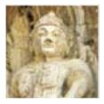
Henan·念天地之幽
天生的古城，在历史长河中犹若昙花一现，在佛祖的庇护下，平凡地安享晚年。即使这样，它仍被后世景仰、追忆。古刹悠然的钟声，敲醒城中往事；少林禅宗一卷，抖落一地繁华；遗落的是过去，读懂的却是现在；转身的瞬间，那一片晴雪，正映出河南的真谛……
龙门石窟
Longmen Grottos
泽 世 石 佛
石窟中巧夺天工的造诣，早已将虔诚之心付之于石崖，后人的仰视与触摸，其实是人与佛的对话，在敬仰之时，已经将灵魂涤荡。
洛阳，素有“九朝古都”之称。作为中国最为著名的古都和中原历史的发祥地，它以其众多的古迹被世人熟悉。其中，龙门石窟便是最典型的代表。
横跨于伊水河上的那座雄伟建筑便是龙门大桥。跨过大桥拱门，便来到龙山第一洞穴——古阳洞。一尊佛、两弟子、两天王。雕刻之精细，仿佛比活佛更加圆润饱满。看着佛像炯炯有神的双目，似乎身心都沐浴到灵气。奉先寺作为龙门石窟开凿的第一个石窟，有着非比寻常的意义。从佛像的造型中便能领略“贞观之治”时的繁荣昌盛。中国书法史上的里程碑——龙品十二门，大部分集中在这里。魏体端正大方、刚健有力，将魏体雕刻于石碑之上，更是成为石窟碑刻书法的精华之作。
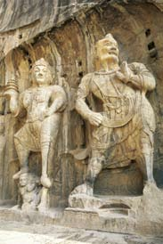
石窟内雕像
宾阳洞是龙门石窟不得不提的经典之作，整个开凿过程长达24年之久。在洞中，三尊佛像分别彰显出北魏、隋唐时期不同的艺术魅力。洞窟正壁的释迦牟尼像，那清瘦的面容，大大的眼睛，细腻的衣锦，让人瞬间置身西域，如沐佛光。
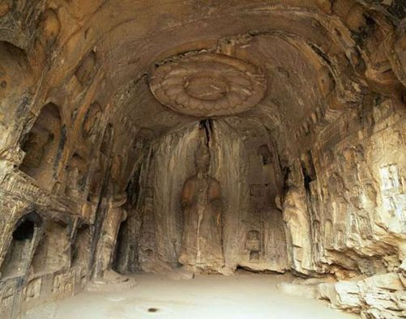
龙门石窟中的雕刻，错落有致，栩栩如生。
万佛洞就在宾阳洞的南边。南北石壁中刻满了数尊小佛，从一寸到几厘米高，多至15000尊。
逝者如斯，整个龙门石窟中的大小佛像，虽然在自然风蚀或是人为破坏中屡遭风霜，受到不同程度的破坏，然而让人欣喜的是它们的今日。看着往来如梭的人们，想必他们触摸雕像时的心情都能引起彼此的共鸣。今天的龙门石窟，是历史遗迹与中国古典文化的象征，人们前来观望，为的不止是探访，更是感怀。
美丽的伊水河仿佛一位智者，在守护石窟的过程中遂变得波澜不惊，仿佛华夏民族千年的风霜雪雨都飘落到河中，顺着它蜿蜒，一去不返。眼中只有将来，只有佛护子孙的坚定信念。
少林寺
Shaolin Temple
古 刹 寻 宗
每每提到少林寺，总是联想到牧羊女那铜铃般的笑声。上个世纪的同名电影影响了太多人，从此古刹悠然的钟声成为人们心中挥之不去的一个梦，少林寺也从此蜚声海外，游人络绎不绝。
山脚下的少林寺，寄托了中华武术的耿耿精神。
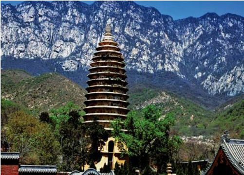
少林寺理所当然地成为天下第一名刹。作为禅宗和武术的双鼻祖，中岳嵩山腹地的“少室山下的茂密丛林”——少林，就此得名。传说当年释迦牟尼大弟子摩柯迦叶的第二十八代弟子达摩来到少林，并且广收门徒，开始传授禅宗。因为少林武术自成体系，且风格独特，由此，少林派在江湖名声大振。即使是在今日，少林寺仍然被后世深深推崇，不仅留下丰富的文物宝藏，更留下大量艺术珍品，从明代的五百罗汉巨幅彩画到北宋的初祖庵大殿，再到清代的石刻、少林拳谱……每一记笔触，都凝聚了武林至尊的大家风范。

少林寺内古老建筑
少林寺以南北中轴，分布着若干杰出建筑，东西两侧为附属设施。从山门，经天王殿、大雄宝殿、发堂、方丈室、立雪亭直到千佛殿一步步迈入传说中的少林寺。无论是建筑群的形式，还是方位空间的选择，甚至周围景观的搭配和雕刻绘画的附着，似乎都在演绎着“天人合一”的崇高境界。禅意无处不在，在少林寺，永恒的禅意让人们感受得身临其境。大雄宝殿就在山门的正面，袅袅香烟缭绕殿上与雕梁画柱相得益彰，悠扬的佛教音乐从大殿传入耳鼓，一股静谧而严肃的气息充斥其中。
壁画是少林寺千年沧桑后神采奕奕的最佳证明，那古老的画种，复杂的构图，绚烂的颜色，让人慨叹。游走于千佛殿，亲眼所见西北墙上绘有五百罗汉朝毗卢，每个僧人的姿态和神韵无一相同，或沉思或举手，或谈笑或持法，或手舞长棍或朗诵经文……这便是传说中的少林寺，这便是少林寺中的禅宗武僧。在蔚为壮观的殿堂里，虔诚地上香、叩首，为后世的幸福做最真挚的记念。
步入千佛殿便是步入了少林武堂。排列整齐的千佛殿，间隔有序且深度相同的48个脚窝，少林武僧们的汗与泪就此洒落。传说，在少林寺习武，三年腿工后方可修炼其他。
传说中的武行虽然遥远，禅意却显现在人生的各个阶段。浮世尘华之上，如何才能持有一颗纯粹的心灵，如何才能时刻警醒自我？一种超然，一种脱俗换得一世清新，这样的道行，真的值得用一生的时间来参悟。
少室晴雪
少室晴雪是少林寺一个颇为奇特的自然景观。在少林寺对面有一块天然形成的巨大的石坡，每逢夏季大雨过后，天气转晴，日光便会照射到石坡上犹如银光般反射。站在少林寺方丈室前的月台举目南望，山峦中的银光像白雪，正折射出耀眼的光芒。
千年韶华——河南的古都 Henan
回眸历史，许昌，不仅是群雄逐鹿之地，更是建安文学的发源地。这里历史悠久、人杰地灵，被封以“中原粮仓”的美誉。从魏文帝立魏开始，这里的名称便一直沿用至今天。
“春花秋月何时了，往事知多少？”中国八大古都里，河南占了一半，无论是洛阳还是开封，再或是安阳与郑州，单是名字便让人联想到无数风流人物，身着黄袍的枭雄胆略，弯月挂额的凛然正气，伴着古都的厚重与沉稳，一气呵成出一卷生动逼真的史诗。
走在安阳，置身古老却举世闻名的殷墟，视线所及之处，尽是宫殿庙宇。冲击视线的不只是这些建筑，而是殷墟作为华夏文明乃至人类文明独特的贡献。它从来都不是几座简单的建筑，几所废弃的遗址，它是一座都城，远在3300年之前，这里的政治、经济已然形成，一个王国的缩影便呈现在这里，殷墟昔日的风貌铺就了华夏民族的今天。
踏上开封的土地，仿佛那种凛然之气顷刻便传入每根神经，地域的厚重潜藏着太多往事，漫步在寻常巷陌中，古文明的美丽就这样绽放在眼前。唐宋的坊、元明的胡同、清代的街衢、数不尽的名寺宝刹，看不完的大家风范。庄严与空灵彼此交替，在时间的更迭中让人慨叹不已。七朝古都，九代帝王，流水落花春去也，不知今昔是何年！
遥想洛阳，九朝古都。中国的历史中，洛阳曾演绎着怎样的风流，那傲人的繁华让人惊诧。龙门石窟的恢弘、玄奘故里的清幽、唐三彩的高超、洛绣的美丽……没有人因为它如今的沦落而放弃这座城的存在，因为，每到洛阳的一处，似乎都见证着不朽的辉煌。
回眸历史，许昌，不仅是群雄逐鹿之地，更是建安文学的发源地。这里历史悠久、人杰地灵，被封以“中原粮仓”的美誉。从魏文帝立魏开始，这里的名称便一直沿用至今天。这里三国文化丰富，且开创了久负盛名的建安文学，不仅是画圣吴道子的出生地，大文豪苏轼、著名诗人沈德潜更是对此地颇为流连……

安阳殷墟出土的商代刻辞卜骨
殷墟文字又称甲骨文，是在河南安阳小屯发现的，是现在发现的中国古代文字中较有体系的文字。
河南作为多朝古都，存在着许多古文化遗址。而这个车马坑，却是年代更久远的殷代遗迹。
河南安阳殷墟博物院的车马坑
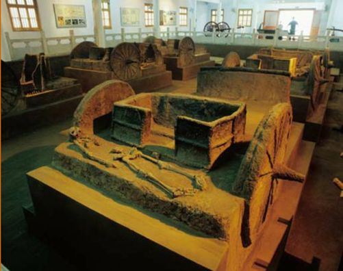
据史料记载，中国第一个奴隶制王朝夏代曾建都于此——郑州。在相当长的时期内，它曾是整个国家的政治中心。与安阳、开封、洛阳一起，郑州被列入中国的八大古都，五朝为都八代为州的光辉荣耀，使郑州犹如一位年迈的老将军，傲然伫立且威风不减。蜿蜒的黄河岸边，这里曾被人们称之为“中原”。一句中原，勾起多少男儿闯荡江湖的侠客梦，一句中原，牵出多少前朝往事。
“韶华不为少年留，恨悠悠，几时休？寂寞深处，无言上西楼。十年贪欢一晌梦，算白了，少年头。”对于河南的故都，人们总难免有这样的意象在脑海中显现：白马寺的悠然钟声、洛阳城外灼眼盛放的牡丹，古城墙上雕刻的字迹……如梦境般地纠结在一起，既深刻又隐约，既慨叹又惋惜。“欢乐都逐韶华去，惟有人，折杨柳。”当韶华逝去，折一枝杨柳，送一份思念，记得曾来探望过，感受过，融入过，便已足够。
山西
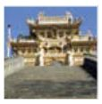
Shanxi
·黎民之雀跃
曾经地广人稀的土地上，智慧在一刹那苏醒，留下一笔繁华。山西是片异彩纷呈的地域，既有古踪可寻，又有高山可攀，佛光庇护下尽显宁泰安康。来自于民间的建筑杰作让皇室慨叹，在不经意的一瞬，便将恣肆奔腾的黄河扼于壶口。山西，因地貌而声名大振，因历史而让人流连……
五台山
Mount Wutai
佛 佑 苍 生
置身犹如人间仙境一般的五台山，穿越茂密的树林，跨过清澈的溪水，呼吸新鲜的空气，尽享迷人的景致，这样惬意的游历过程，岂不快哉？
坐落于山西省内的五台山，不仅是著名的佛教圣地，更是难得的避暑佳境。它与浙江的普陀山、四川的峨眉山、安徽的九华山齐名，历史悠久源远流长。在数座多姿多彩的古建筑群中，无数善男信女来此进香，无数中外游客来此消夏。
关于五台山，一个流传千载的传说一直为人们广为传颂。相传，五台山原本气候恶劣，酷热难当，漫山遍野的飞沙走石，让当地黎民百姓苦不堪言。文殊菩萨为了搭救百姓，从东海龙王那儿借来歇龙石，镇住了施虐的妖魔，从此五台山百草竞发，一片生机盎然。人们为了感念文殊菩萨的恩德，特地修筑起清凉寺，并将这里称为“清凉山”。到了北齐才更名，因为是五座顶平如台的山峰环抱组成，所以称之为“五台山”。显通寺是五台山历史最为悠久的寺庙。在这个面积约8万平方米的寺庙中，大小铜铸佛像万余尊，门前钟楼上那座重达5吨的铜钟，每每敲击，声音洪亮而悠然，传遍全山。
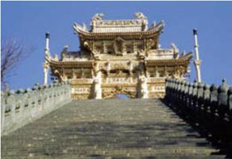
五台山建筑
塔院寺原是显通寺的塔院，明代重修舍利时被独立为寺，2000年前由古印度国王始建，里面以供奉佛陀真身舍利的大白塔而得名。它位于寺庙之前，因其高大醒目、位置优越，曾一度被看做是五台山的标志性建筑。
大大小小的130座庙宇中，时刻都能感受到五台山的历史文化。游走其中，仿佛时光倒流，返璞归真之感油然而生，是厚重的沉淀却无时无刻不在升华出更为耀眼的光芒。生动翔实的佛教文化，沃土滋生的锦绣中华，怎能不叫人慨叹？也许，在一片葱茏之中，五台山的默默便是佛教中最为高深的境界，而那些千丝万缕的香火，便是佛教信徒最为深刻的虔诚记忆。
香烟缭绕的五台山，彰显了佛教的静谧氛围。
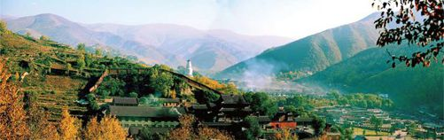
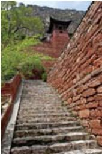
有致的石路石墙
恒山
Mount Heng Shan
纤 尘 不 染 凝 深 邃
仁者爱山，智者爱水。走进恒山，如同走进了一幅仁智的画卷，顿时禅意满眼。
恒山，横跨山西、河北两省，人称北岳，与东岳泰山、西岳华山、南岳衡山、中岳嵩山并称为“五岳”，从古至今，以其神奇的自然风景和重要的地理位置成为自然景观中的奇迹以及兵家必争之地。“绝塞名山”的封号，饱含着人们对它的爱戴。
相传，在4000年前，舜帝寻狩来到恒山，见其山势险峻，峰奇无比，便封之为北岳。到了秦始皇时，朝封天下十二名山，恒山被推举为天下第二。之后的历代君主都曾差臣到这里朝圣，无数文人墨客来此游览，使恒山成为中华历史中一笔亮色。
恒山上的道观，在松树的衬托下显得很悠远。
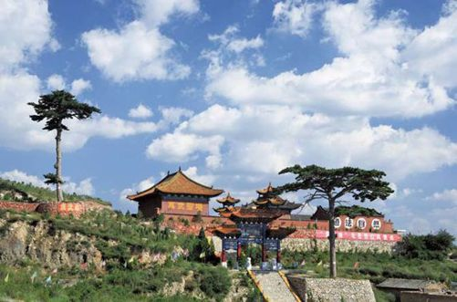
走进恒山，即刻感受到一种平实朴素的庄严。在山松古寺中，它是内敛的，在陡峭危石之中，它的奇特是静穆的。恒山像一个胸怀宽广的仁者，那腹中空空的大气，让人皆自叹不如。其实恒山也恬淡。在一片石阶之中，在一群飞鸟之旁，它丝毫不显矫情的姿态，像是在拒绝着尘世的恩宠，却掩饰不住自己内在的光芒。
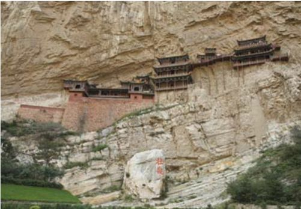
著名的恒山悬空寺，建筑在悬崖峭壁之上。（左图）
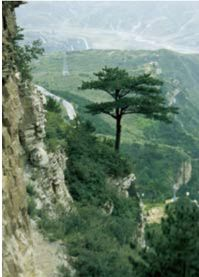
恒山松（右图）
松是恒山一处平凡却独特的景观。恒山松，风格独特，其中四株唐代古松，被后人称之为“四大夫格”。看那悬于石外根茎的苍劲，牢牢抓住岩石的姿态，傲然挺立的身形，翠绿葱茏的气势，让人不禁想起“天行健，君子以自强不息”的古训。
“悬空寺，半天高，三根马尾空中吊。”这句民谚，说的是北岳恒山的第一景观——悬空寺。西峰之上，苍松之间，以北岳庙为首的恒山庙若隐若现，神秘的气息时刻吸引着八方游客。每遇阴雨，出云洞口还会游出丝丝缕缕的云彩，像羽化登仙的后续，让人遐思无限。故留下人们的慨叹——“恒山云，变幻无穷”。
从会仙府抬头望去，恒山峰峭拔的身影就在上空显现。略显苍老的身形，仿佛到了垂暮之年的仁者，满眼的得失无意、宠辱不惊。
恒山峰所折射的，也许便是“恒”的真谛。恒山悠远、绵长，却让人见识到“上善若水”的真切。恒山凛冽、决绝，却是超凡脱俗、意境深远。
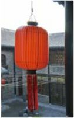
古城上火红的灯笼
平遥古城
The Ancient City of Pingyao
正 是 繁 荣 昌 盛 时
穿越时光的隧道，一座古城出现在面前。逼仄的巷弄，夕阳渐远的瞬间，让人忘记朝夕的更迭，青砖灰瓦的触痕中，依然还是明清时的温婉。
一座古城，背负起太多往事，留给后人的，是一场千年的迷局。康熙四十三年，皇帝西巡路经这里，一声令下，四面楼起，平遥的城池从此更加壮观。在那6000余米的周长中，平遥就此被一隔为二，城中彼岸花开，城外恍若隔世。墙内依稀明清，街道、店铺、市楼；墙外新址横生。古代与现代交相辉映，让人慨叹不已。
驻足于别致的城楼，仿佛自己是几百年前的一名书生，在城楼之上，遥望着自己的仕途梦。
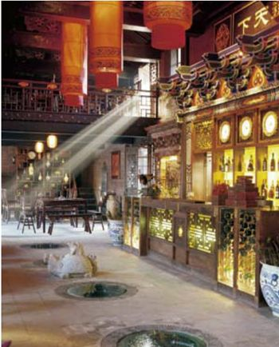
夜晚的平遥多了分妩媚，少了些骨鲠。
在古城的中心，一座18米高的市楼格外夺人眼球。围绕它的是八大街、八小街和七十二小巷，放眼望去，布局合理，有条不紊。在平遥的大街，古店铺、古招牌随处可见，或者雍容华贵，或者醒目异常。在这样的情景之中，历史不再遥远，伸伸手摸摸牌坊，便是与历史对话了。古色古香的真谛被诠释得淋漓尽致。
平遥是全国第一家票号诞生的地方。“日升昌”便在这里创立。对于中国近代的金融业，它的创立有着重要的地位。那时候，一些大商号经营大宗的跨地区业务，因为巨额现银的携带不便，一种专营于汇款的票号行业就此诞生。鼎盛时期的平遥，“日升昌”曾有过全国二十几家的店铺，由于诚实守信，业务甚至远赴日本、新加坡等国外地区。小小的票号竟然“汇通天下”，前人的智慧甚至被后人所推崇。依票号原址而建的博物馆中，不仅记录着当年票号业的兴衰，那独具特色的建筑艺术，同时也吸引着更多人的观摩。
平遥就像它的名字，平凡而遥远。来一块当地特产的牛肉怎么样？“肥而不腻，瘦而不柴”，原来这牛肉也曾修行了几百年呢！
平遥商人创造了一个时代，时至今日仍不断地继续着。他们靠自己的辛勤劳作和诚实守信使这里昌盛的火种一直延续。鞋子踏在石板铺就的地面上，在巷子中发出嘎达的声响，走在这里，心中满溢着欣喜之情。多想就这样一直走下去，走进古城的清幽，走进古城的时光……那一路的旅程，将伴随着美丽的心境一同谱写出晋商文化的后续篇章。
古老整洁的房舍，成了现代人凭吊和敬仰的所在。
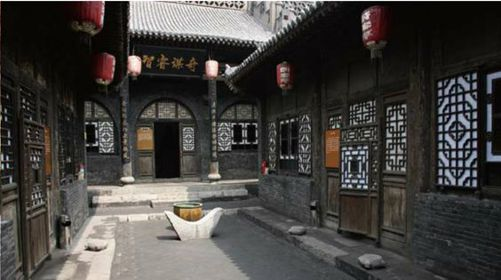
“大院”拾零 Shanxi
山西，地理位置独特，中原与北方游牧民族物资交换的腹地，加之晋中南的地少人稀，人们理所当然地选择了外出经商。因为诚实守信的性格和团结勤俭的作风以及严谨科学的管理，晋商的事业就此平步青云。而回乡后他们就建起了座座大宅。
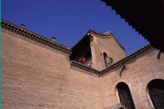
乔家大院一角
电视连续剧《乔家大院》热播后，它的故事发生地山西乔家大院更成为了人们关注的地方。
一部《大红灯笼高高挂》不仅成就了一个女子，更成就了一片院落。从此，晋中地区的“大院”一发不可收拾，无论哪个季节，都会迎来络绎不绝的游人。一片黄土地，一片未开化的混沌，犹如盘古开天辟地时的景观。不经意间的觉醒，几经沧桑，终于在古今变迁之后成为一处特别的地域风情为人所称颂。
40多年前，大师梁思成在山西考察古建筑时，那富丽中蕴含的深邃让他印象深刻。他在回忆录中感慨地写着：“这种房子在一个庄中可有两三家，遥遥相对，仍可以想象到当日的气焰，其所占地面之大，外墙之高，砖石木料上之工艺，楼阁别院之复杂，均出于我们意料之外许多……由庄外遥望，十数里外犹见，百尺矗立，崔嵬奇伟，足镇山河，为建筑史上之荣耀。”
山西，地理位置独特，中原与北方游牧民族物资交换的腹地，加之晋中南的地少人稀，人们理所当然地选择了外出经商。因为诚实守信的性格和团结勤俭的作风以及严谨科学的管理，晋商的事业就此平步青云。由于难舍对故乡的眷恋，苦心在外经营的商人在飞黄腾达之后便在原籍置起屋宅，一座座大院便奇迹般地出现在晋中那块不算广袤的土地上。
豪华、气派，这是晋商实力的最真实写照。看不尽的大院高墙，仿佛里面是享不尽的荣华富贵。
“皇家有故宫，民宅看乔家。”乔家大院是第一个为人们所熟知的。在这个完全城堡式的建筑里，院墙如同城墙，高大程度可见一斑。从前，更夫夜里便行走在院墙上，每每响起梆子的声音，那洪亮，方圆十里都听得到。乔家大院的布局讲究的是一个方正，工工整整的建筑风格配之豪华的家具摆设，一眼望去，不禁让人遥想起大院繁华时的种种。一盏盏火红的灯笼高高挂起在院墙，燃尽一地沧桑的流年。
渠氏家族是明清以来闻名全国的晋中巨商，由此观之，渠家大院便也成了不容忽视的一处宅院。罕见的五进式穿堂院、栏杆院、统楼院与包厢式的戏台院被称为渠家大院的“四绝”。远远望去错落有致的顶棚，悬山式、歇山式、卷棚式、硬山顶式……让人惊诧不已。院落中的技艺精湛的石雕，尽显渠家大院的高雅美观。
曹家大院突出在富贵之气。整体结构遵从篆书书法中的“寿”，多寿多福多子是曹家大院的主旨，三座四层的堂楼，虽不霸气，却充斥着贵气。
在一片连绵的山脉间，一片山坡上，王家大院依其特有的姿态伫立其中。红门堡建筑群的总体结构，隐一个“王”字于其中，作为太原王氏后裔的静升王家，大院似乎饱含他们对于家族的殷切期望。
每个大院都展现出独特的民俗风情，每一处场景都包含着中国晋商文化。从这些恢弘的建筑中，从这些寓意丰富的图案中，我们似乎将晋商文化的脉络重温。且不论大院衰落的真实原因，单是放眼于大院建筑的绮丽豪华，交相辉映的辉煌中，足够让人们放飞遐思，遨游万里。
平遥被称为“民间的故宫”。到了这里你会发现，这种说法绝非虚言。
平遥古城中的宅院
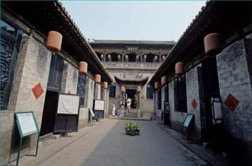
壶口瀑布
Hukou Waterfall
汇 万 千 壮 观
一种冲动，一种奋发，仿佛置身于滚滚波涛，身心皆被震撼。那如万匹战马齐奔的恢弘场面在瞬间便征服全部的感官。
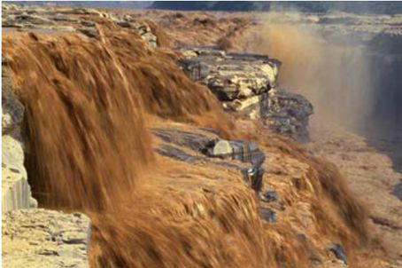
黄河水到壶口后奔腾而泻。
一直以来，我们习惯了将黄河贯穿于各种比喻，它的奔腾、它的不羁、它的浩荡让其他河流相形见绌。在遭遇壶口之前，黄河是一个不朽的传说。
不知是峡谷征服了黄河还是黄河畏惧了峡谷，在晋陕大峡谷，一个瀑布就这样形成。“源出昆仑衍大流，玉关九转一壶收。”这是古人对它的描写。在它面前，无论黄河曾有过怎样的张狂，却也在骤然间被收缩。随着河水不断地聚拢，奔腾咆哮着跃入深潭，刹那之间，溅起巨浪无限。仿佛一只神来之手倾倒巨壶，从壶口源源不断倾倒而出的，便是滚滚黄河水。
壶口瀑布西濒陕西，东临山西，宽达30米，深约50米，最大瀑面超过3万平方米。在中国，它是除了贵州省的黄果树排名第二的瀑布。每当黄河水流至此，那超过500余米宽的洪流瞬间被束缚，形成上宽下窄之势，在50米的落差中倾涌而下，声势仿佛从巨大无比的壶中倾出，故取名为“壶口瀑布”。
在壶口瀑布，两大著名奇观甚是罕见。
由于壶口瀑布的落差巨大，瀑布下的水流湍急，在这里行船几乎是很难实现的事情。从壶口上游向下的船只，都要到上边龙王庙那里停靠，待货物全部换下，人们用担挑起或用畜驮，直到下游的码头。与此同时，还要将空船托至下游。待水流变缓，再重新载人装物，继续前行。然而，在“旱地行船”的过程中，经常是充满艰辛。
古河名胜
离壶口瀑布不远的南边，便是龙门上口——孟门。“孟门夜月”和大禹治水中的“镇河石牛”分置其中。游人先游壶口，再走孟门，最后来到龙门，被称为“黄河游三绝”。
另一处景观，名为“水底冒烟”。在黄河与壶口汇合的地方，由于瞬间激起大量水雾，水雾在腾空之时幻化成小水珠，数十里之外远观，便是一片片浓密的烟雾，弥漫于天际，久久不肯散去。
如果拥有过人的胆色，不妨到那距离瀑布只有数米之遥的巨石上留下值得珍藏的瞬间。一阵惊魂未定之后，那征服了黄河的自豪感定会让人们刻骨铭心，与满身的湿透和褐黄色的泥点一起，成为永远的纪念。
来壶口瀑布看黄河倾流，更像是一次洗礼，在风声水声中着实体验那种大浪淘沙的本色。看似狂暴，却仍能与自然和谐共生，成长为一处独特的风景。阳光折射中，彩虹依稀可见，那斑斓的色彩，其实正是黄河飞流中彰显出的另一种瑰丽。
赶上黄河汛期，瀑布水势汹涌，扬起满天水汽。
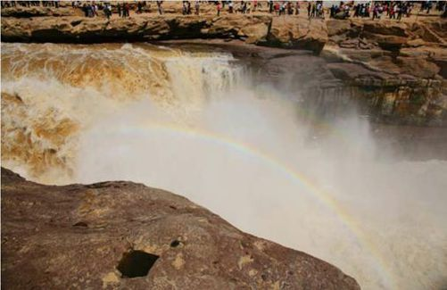
陕西
Shanxi
·举杯邀明月
陕西，掩藏太多尘封古事的地方，除了见证一代代江山人才的轮换更迭，更守住了古都的命脉，让长安的风韵历久弥新。在这里，让人感叹的不只是攀爬华山时的艰险，更有秦始皇陵的盛世重现，一座座古城楼，一朵朵山丹丹，在稍纵即逝的韶华中，独一无二地绽放……
华山
Mount Huashan
征 服 生 命 的 高 度
华山是中国五岳之一，同时被人们封为“奇险天下第一山”。
似乎巍巍然的华山注定和道教一脉相承，或者说华山和道教本乃天造地设。在人们的臆想中，它们如同得道的仙人，俨然一副“道可道，非常道”的姿态，在喧嚣尘世中倍显宁静与豁达。
华山山势峻峭，壁立千仞，群峰挺秀，以险峻称雄于世，自古以来就有“华山天下险”、“奇险天下第一山”的说法。
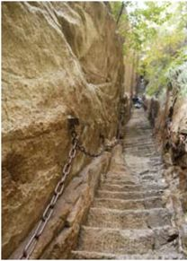
自古华山一条路。这样的道路，实在是考验人的所在。
华山有五峰，朝阳、落雁、莲花、五云、玉女，然而想要登上华山，却只有柱峰顶向北倾斜这样一条路。东南西三面皆是陡峭的悬崖，让人望而生畏。东峰朝阳峰海拔2096.2米，是华山的主峰之一，因为朝向东方，更成为著名的观赏日出之地。在峰顶上，有一处平台，虽居高临险，视野却格外开阔，人称“朝阳台”。
相传，南峰落雁峰的由来是因为回归大雁常在这里歇息。峰顶，便是华山的极顶。在峰顶眺望四周，视野顿觉辽阔之至。那10余平方米的平坦峰顶处，有一个直径约为1米的天池。大石头中央，竟然生长着一颗根基粗壮的墨绿色松柏，华山的确神奇，纵使山上的植物，也都突显出神奇的特征。
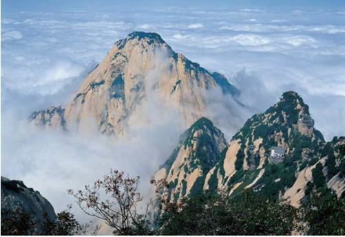
云雾笼罩的华山，是诗情画意的所在。
西峰莲花峰因其形状像莲花而得名，峰侧一块巨石，拦腰断为三截，石头下方的空间，仿佛一位妇人仰卧后留下的印记。这便是传说中沉香劈山救母故事的源头。
登华山，需要的是屏气凝神地专注，那样的时刻，心就只惦记着一件事情。石头台阶容不下一只脚，调整姿势倾斜着前进，额头上阵阵发热，似乎有股股汗珠冒出。
华山因为其险峻，才让人有谨慎行走渐行渐歇中观赏美景的深刻记忆。宛如道家的修行，在磨砺中蜕变，在困苦中奋发。端坐于华山峰顶，就这样，洗却尘世浮华，恍然不觉中进入另一片宁静世界。
华山有一座玉泉院始建于宋神宗皇佑年间，是中国北方一座出名的全真道观，是道士贾得升为师傅所建，几经破坏几经修缮。两千多年来，这里会聚许多名人高道讲学修炼。玉泉院内，近代冯玉祥的题字也列在其中。
西安
City of Xi’an
遥 望 古 城 ， 梦 回 长 安
“西安自古帝王都”，这句话容不下丝毫怀疑。也许每个人都无法读透，也许读透的人仍觉得肤浅，从古至今一直一直的蔓延，古朴的城市和生命的气息，铿锵中永远是帝王之气，永远是生命最原始的颜色，纯粹而张扬，蓬勃且高昂。
江山代有人才出，各领风骚数百年。在世事更迭面前，西安永远流露出释然之情。
西汉初年，刘邦定都关中，意味着长治久安，故取名“长安”。明洪武二年，明政府改封为西安府，取义“安定西北”，故更名“西安”。它的久远，远不止如此。从公元前11世纪到公元10世纪的1100年中，13个朝代在这里更替。它与雅典、罗马、开罗并驾齐驱，是一座无可取代的古都。
古老的城墙，还有护城河，显示了西安作为古都的魅力。
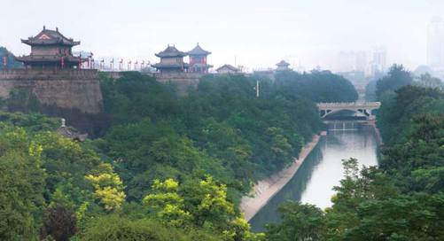
无知的人指责它今日的颓败。城墙粗糙的纹理、斑驳的图案，恰似一种渗入肌肤深处的暗淡，像是到了垂暮之年的老者，面庞上的老人斑清晰可见，永远不可能抹去洗净。然而，透过它的眼睛，你会看到那深邃的眼神中融入了一抹婴儿般的湿润。那湿润是它的少年时光，那湿润随时会再次映出历史的辉煌。
古城楼兰，今日只剩下一地风沙；古都安阳，如今只剩下一座废城。西安比它们都久远，经历了战火、沐浴了灾难，却一路披荆斩棘，成为了不老的传说。丝绸之路从这里伊始，唐僧取经从这里出发。三千竹简，写不下古老的西安。行走在今天的西安，汉唐的神韵清晰可见。护城河水依然青绿，钟楼城墙依然挺拔。
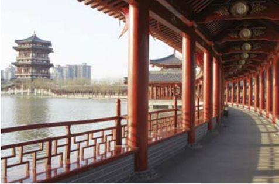
大唐芙蓉园。位于古都西安大雁塔之侧，是中国第一个全方位展示盛唐风貌的大型皇家园林式文化主题公园。
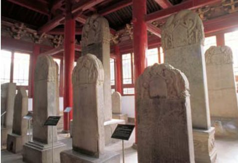
著名的西安碑林
“华岳仙掌、骊山晚照；灞柳风雪、曲江流饮；雁塔晨钟、咸阳古渡；草堂烟雾、太白积雪。”在西安的碑林里，那块清代碑石详细记录出以西安为中心的关中八景。然而那份久远，在千年古柏之间的风骨和神韵，又怎是只言片语可以叙述得清的？抬起头，火红的夕阳可是汉时的那颗？
即使是在今日，西安仍被懂得它的人无限青睐。走下鼓楼，穿过城门，熙攘的人群、独具特色的小店，到露天小吃店一品正宗陕西小吃，记得留下空余的胃，为了前方不远处那同样让人垂涎的小吃。大而深的碗里，是满满腾腾的羊肉泡馍。将干软的泡馍撕碎，扔进油汁中，大块羊肉熟烂酥软，嗅着那份扑鼻的香气，真想一辈子就定居在此。
说不清是因为这里的历史还是建筑，是民风还是品质，总觉得那份感觉似曾相识。也许在若干年前，在几番轮回之前，本是一个寄情山水的乐观文人，来到长安，从此便迷恋上古城厚重的美感。在时间与空间编织出的错误中走失，于是时时渴盼，期望有一日，可以重游故地，永驻长安。
秦始皇陵兵马俑
Mausoleum of the First Qin Emperor
气 吞 万 里 山 河
很多时候，尤其面对强大的力量时，越想表达，越是无从表达。几千年，无数个沧桑的日夜，无数个转瞬的流年，无数个风花雪月的过往，无数个风驰电掣的瞬间，邪恶的，美好的，深奥的，最终被时光包裹，成为历史的永恒。为后人发觉，或许是为了瞻仰和留念。
无论是经意还是无意，西安的黄尘古道总是显出与众不同的气息。奔赴这里的人们，大多流露出虔诚而清澈的眼神。那些历史长卷中几个细腻的笔触，让人们无上崇敬，似乎在行走的瞬间，丝绸之路上清脆的驼铃声已穿越长卷，古城街道中斑驳的城墙已跃然于卷外。
然而，在面对另外一样景观时，那种强大的震慑瞬间让所有灵魂无处可逃。那份厚重之感，让所有笔触皆失去艳丽的色彩。历史的天空下，怀旧光华。中国几千年的文明背后，总掩藏着帝王权力的恣肆。然而，有限的生命终究无奈无限的时光，几十年后，人们视线所及之处，无非又多出一座皇陵。
俑坑中的俑兵
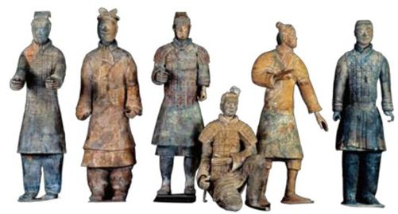
秦始皇陵兵马俑的出土，一跃成为“世界第八大奇迹”，它的意义，在历史与美术史的范畴中大放异彩。兵马俑的表情，很快便将人引入战马嘶鸣的画面，我们仿佛看到，那运筹帷幄的将军正努力地指挥，神态各异的士兵正积极响应。时至今日仍然锋利的武器，精良的做工，实在是蔚为壮观。
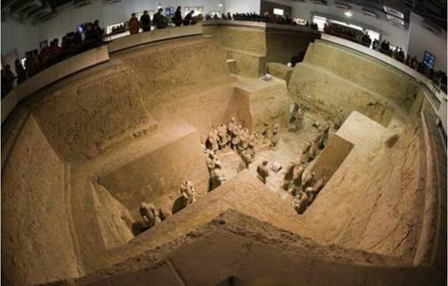
壮观的俑坑，吸引着无数人前来瞻观。
秦始皇，一个有着重要功绩的帝王，完成了历史的统一，开创了一个时代。秦始皇，一个稀世的暴君，对百姓压榨剥削，直至江山尽失。
走在兵马俑馆内，树木的葱茏让人忘却回忆历史时的紧张。面前，便是被誉为“青铜之冠”的铜马车。那悠然流露出的凝重气息，更显得马车气势不凡。
秦俑文物展厅内，灯光幽暗。后人对于文物的关怀，融入了全部人文情感。透过微弱的灯光，等比例缩小1/2的铜车马映入眼帘。如此的精致细腻，如此的富丽堂皇，面对这些，忽然想起西安当地的俚语：翻身不忘共产党，致富不忘秦始皇。一个小小的马车，不仅暗藏机关，还可以调整伞盖的方位用以遮风挡雨，不仅可以坐卧看到车窗之外，还可以防止外面向里窥探。这样高超的技艺，这样强大的铸造工艺，是不是真的应了那句俚语呢？
秦俑，印证了一段记忆。在风起云涌过后，它们进入低沉的梦境。梦中的呢喃或许是关于精忠报国的信誓旦旦，又或许是携妻带子荣归故里的渴盼。
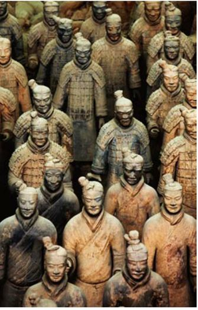
俑坑中密密麻麻的陶俑，像当年一样守卫着秦始皇陵寝。
时间太快，时间也太匆匆。那段睡眠还没有自然地苏醒。记忆跳回到两千年前。那一天，当最后一块木板遮挡住最后一缕阳光，人们的脚步越走越远。从此，墓地陷入一片凄冷与荒凉，那些兵俑坚守着虚实无度的荣耀，从此开始漫无边际的等待。等待一个轮回，一次命运的转换，本该是驰骋在疆场，本该是亡命于天涯。或是等待千年之后的一声锤起，虽不知今昔是何年。
秦始皇陵是中国帝王陵中最为奢华的一座，规模之大，可谓前无古人后无来者。陪葬物之多，让后人汗颜。古语有云：乱世出盗贼，盛世现奇宝。当沉睡千年的兵马俑凌空出世的刹那，仿佛时光逆转，盛秦再现：坑道内，一列列锈色兵俑整齐地排列，军容之威严，气势之磅礴，千军万马的恢弘就此呈现。这不是幻觉，或许可以被想象成为是一段风化了的历史，两千年之后的某一天，咒语解除，历史重现。
那一支集庞大、豪华、英勇为一身的军队，曾陪着他们的君王一路披荆斩棘。“静极则生动，愈静则愈动”，充满生气、形态各异的兵俑，在一片静态的陆地之上，将那种巨大的威慑力表达至极。或是昂眉张目，或是肃然伫立，气吞山河的磅礴气势中，彰显出秦始皇兵马俑“内在的生气、情感灵魂、风骨和精神”。空前绝后，无与伦比。
而今，战车不再驰骋，战马不在奔腾，一切对峙都已偃旗息鼓，曾经炽烈燃烧过的大地陷入万般寂静。可是，那些与秦始皇同葬的兵马俑，仍然以寂寞的姿态站在那里，深情中充满期待，充满渴望奋勇杀敌的情愫。似乎时刻在等待着君主的一声令下，伴着出征时的高涨气势，为秦国再立一次汗马功劳。
八百里秦川大地上，那些鲜活的面孔，那些矫健的身姿，从此演绎成一个不老的传说。